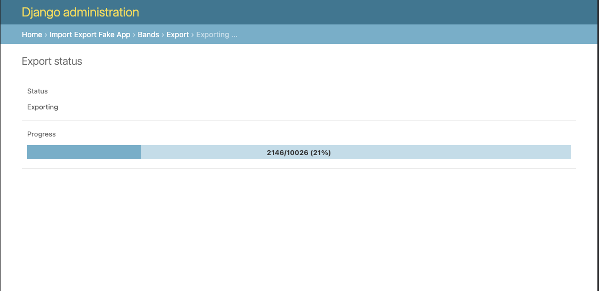
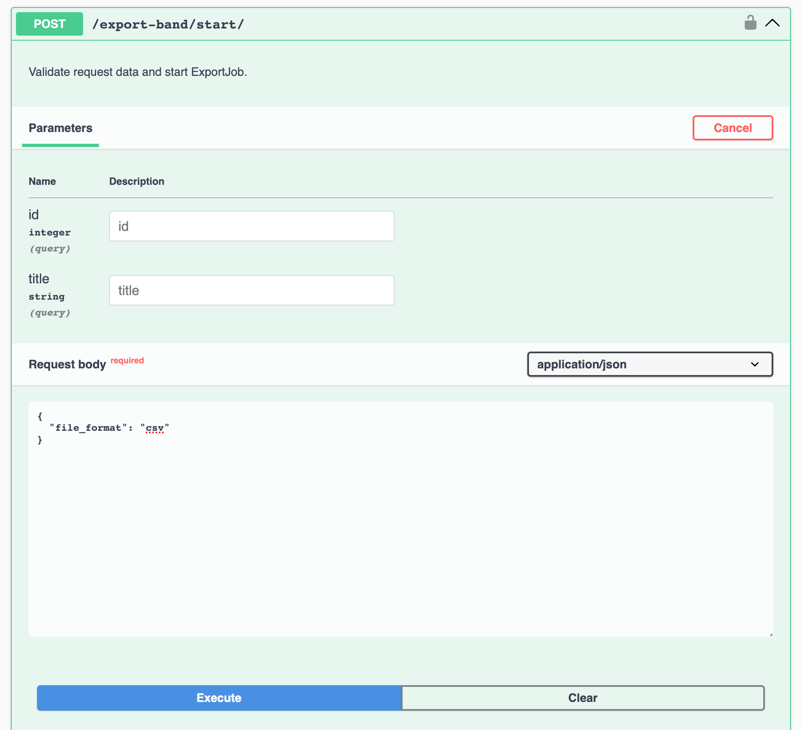
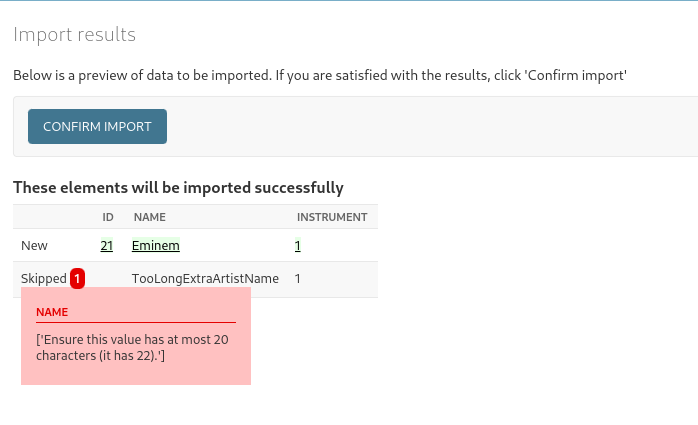

Extensions¶
This package is an extension of the original django-import-export, so for more information
on the import/export process and advanced resource usage, refer
the official django-import-export documentation.
The following section describes the features added by this package.
ImportJob/ExportJob models¶
django-import-export-extensions provides the ImportJob and ExportJob models to store all
information related to the import/export process. Additionally, these models are involved
in the background import/export tasks.
The job models are already registered in Django Admin and come with custom forms that display all relevant job information, including the current import/export status.

ImportJob/ExportJob models contain useful properties and methods for managing
the import/export process. To learn more, see the Models API documentation.
Celery admin mixins¶
The admin mixins have been completely rewritten, although they still inherit from the base mixins:
mixins.BaseImportMixin, mixins.BaseExportMixin, and admin.ImportExportMixinBase.
The new Celery admin mixins add pages for displaying import/export status and use custom templates
for both the status and results pages.
After starting the import/export process, you will be redirected to the status page. Once the import/export is complete, you will then be redirected to the results page.

ViewSets¶
The ImportJobViewSet and ExportJobViewSet viewsets make it easy to implement
import/export functionality via API. To use them, simply create a custom class
and set the resource_class attribute:
from import_export_extensions.api import views as import_export_views
from . import resources
class BandImportViewSet(import_export_views.ImportJobViewSet):
resource_class = resources.BandResource
class BandExportViewSet(import_export_views.ExportJobViewSet):
resource_class = resources.BandResource
from rest_framework.routers import DefaultRouter
from .api import views
band_import_export_router = DefaultRouter()
band_import_export_router.register(
"import-band",
views.BandImportViewSet,
basename="import-band",
)
band_import_export_router.register(
"export-band",
views.BandExportViewSet,
basename="export-band",
)
urlpatterns = band_import_export_router.urls
By default, all import/export jobs for the set resource_class will be available,
but you can override the get_queryset method to customize this behavior. Additionally, you can
override the get_resource_kwargs method to provide custom values in the resource class
(e.g., for the start action).
These viewsets provide all the methods required for the full import/export workflow: start, details, confirm, cancel, and list actions. There is also integration with drf-spectacular. If you have it installed, you can view the generated OpenAPI UI for these viewsets.

Filters¶
The CeleryResource and CeleryModelResource classes also support
django-filter to filter the queryset for export.
To use this feature, set the filterset_class attribute on your resource class and pass
filter parameters as the filter_kwargs argument to the resource:
from django_filters import rest_framework as filters
from . import models
class BandFilterSet(filters.FilterSet):
class Meta:
model = models.Band
fields = [
"id",
"title",
]
from import_export_extensions import resources
from . import filters
from . import models
class BandResource(resources.CeleryModelResource):
filterset_class = filters.BandFilterSet
class Meta:
model = models.Band
fields = [
"id",
"title",
]
If filterset_class is set for your resource, you can pass filter_kwargs to filter export
queryset:
>>> from .resources import BandResource
>>> from .models import Band
>>> Band.objects.bulk_create([Band(title=title) for title in "ABC"])
>>> BandResource().get_queryset().count()
3
>>> filter_kwargs = {"title": "A"}
>>> band_resource_with_filters = BandResource(filter_kwargs=filter_kwargs)
>>> band_resource_with_filters.get_queryset().count()
1
Pass filter_kwargs in resource_kwargs argument to create ExportJob with filtered queryset:
>>> export_job = ExportJob.objects.create(
resource_path=BandResource.class_path,
file_format_path=file_format_path,
resource_kwargs={"filter_kwargs": filter_kwargs},
)
>>> export_job.refresh_from_db()
>>> len(export_job.result)
1
Since we are using the Django REST Framework filter set, the ExportJobViewSet also supports it.
It automatically uses the filter set defined in the resource_class. You can see that the start
action expects query parameters for filtering:

Force import¶
This package includes a "force import" feature. When enabled, rows with errors will be skipped, and the remaining rows will be processed.
Admin page¶
This functionality available in admin:

If any rows contain errors, they will be reported during the parse/import stage:

API¶
In the API, there are two additional fields: force_import and skip_parse_step.
-
force_import- Allows you to skip rows with errors. -
skip_parse_step- Enables you to run the import task immediately, without needing to call theconfirmendpoint.

Widgets¶
This package also provides additional widgets for some types of data.
FileWidget¶
Working with file fields is a common task. The FileWidget allows you to import/export files,
including links to external resources, and saves via picked STORAGE.
This widget loads a file from a URL into the media directory and correctly renders the link
for export. It also supports the AWS_STORAGE_BUCKET_NAME setting.
IntermediateManyToManyWidget¶
IntermediateManyToManyWidget allows to import/export objects with related items.
Default M2M widget store just IDs of related objects. With intermediate widget
additional data may be stored. Should be used with IntermediateManyToManyField.
The IntermediateManyToManyWidget is an advanced widget that allows you to import/export objects
with related items in a Many-to-Many relationship, while also supporting additional data beyond
just the relationship IDs. Unlike the default M2M widget, which only stores the IDs of related
objects, the IntermediateManyToManyWidget enables you to store additional information for each
related object, making it more flexible for use cases where extra attributes or fields need
to be saved alongside the relationship.
This widget is designed to be used with the IntermediateManyToManyField in your model.
Usage:
class ArtistResourceWithM2M(CeleryModelResource):
"""Artist resource with Many2Many field."""
bands = IntermediateManyToManyField(
attribute="bands",
column_name="Bands he played in",
widget=IntermediateManyToManyWidget(
rem_model=Band,
rem_field="title",
extra_fields=["date_joined"],
instance_separator=";",
),
)
class Meta:
model = Artist
clean_model_instances = True
fields = [
"id",
"name",
"bands",
"instrument",
]
def get_queryset(self):
"""Reduce DB queries number."""
return Artist.objects.all().prefetch_related(
"membership_set__band",
"bands",
)
Result (result.xlsx)¶
| id | name | Bands he played in | instrument |
|---|---|---|---|
| 1 | Rachel Schmidt | Walter-Hodges:1971-09-22;Ortiz-Hughes:2018-02-02 | 1 |
Fields¶
IntermediateManyToManyField¶
This is resource field for M2M with custom through model.
By default, django-import-export set up object attributes using
setattr(obj, attribute_name, value), where value is QuerySet
of related model objects. But django forbid this when ManyToManyField
used with custom through model.
This field expects be used with custom IntermediateManyToManyWidget widget
that return not simple value, but dict with intermediate model attributes.